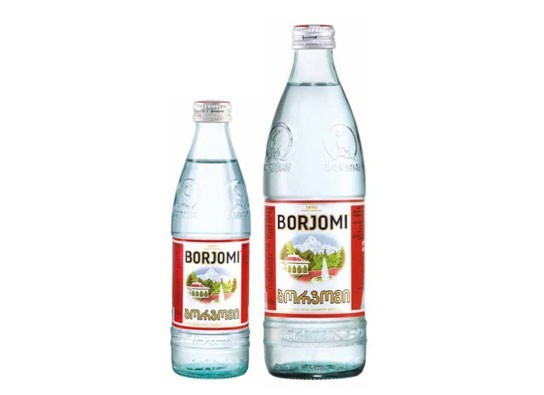

Рефакторинг стилей. Грабли и лопаты
Алексей Золотых
Не все могут смотреть в завтрашний день... или немного физики
Рудольф Клаузиус
1822 — 1888
Второе начало термодинамики
Закон неубывания энтропии
Формально
Рефа́кторинг — процесс изменения внутренней структуры программы, не затрагивающий её внешнего поведения и имеющий целью облегчить понимание её работы.
Как мне рефакторить стили?!
Моя история
- 2 000 000 строк кода
- Измененные библиотеки под VCS
- 30+ разработчиков, которые постоянно пишут фичи
- less, css, stylus
- 2 недели на рефакторинг
Два подхода к рефакторингу
- Стили как текст
- Стили как код (семантически)
Рефакторить стили семантически сложно
Основные причины
- Минимум 3 контекста:
html, css, js , less, stylus, typescript, jade, jsx - Контексты плохо связаны между собой
И это даже без javascript
Удобно добавлять префикс js- для классов, которые использует javascript
Относитесь к стилям как к тексту
Поиск, консоль и регулярные выражения
- Работа с путями
- Простые случаи с переименованиями
- Небольшие изменения
Поиск и замена в пути встроена в IDE

Поддержка регулярных выражений

Почти тоже самое, но из консоли:
awk, sed, rm, mv, touch, ag, grep, ack, cat, pbcopy, pbpaste, ripgrep, yank...
Знать консольные команды просто необходимо
#!/bin/bash
STATIC_HOST="http://example.com"
sed -i '' "s|url(\([^)]*\)|url($STATIC_HOST\1|g" style.css
Есть проблемы
...
background-image : url(/image/test.png);
background-image : url("/image/test.png");
background-image : url('/image/test.png');
...
Нужно предусмотреть все варианты
Отладчик регулярных выражений


Используйте статические анализаторы (CSSLint или встроенный в IDE)
Единообразный код проще рефакторить
Встроенные средства для рефакторинга
- Переименование
- Перетаскивание мышкой файлов и папок
Хорошо для маленьких проектов
Чем круче ваша IDE, тем дольше ждать результата
Иногда, в бою, это почти всегда не работает
Браузер в любом случае читает CSS
Можно использовать CSS как промежуточный формат для перевода между различными препроцессорами
Рефакторинг на основе AST CSS
(Абстрактное синтаксическое дерево)
POSTCSS + plugins
- Лишние цвета
- Дублирование стилей
- Ненужные префиксы
- Новые переменные
- Привести к единому стандарту
Для всего остального можно написать плагин
Помните, добрые менеджеры из соседнего отдела не дают вашим коллегам спать

Мердж изменений — очень больно
А что если написать сценарий рефакторинга и применять его автоматически
Gulp, Make, Bash
Gulp
gulp.task('refactor', function () {
return gulp.src('folder/**/*.js') // Нужные файлы для рефакторинга
.pipe(RefactoringPlugin()) // Рефакторим код
.pipe(gulp.dest('./')) // Кладем на место
})
Если что-то пошло не так, то
$ git reset --hard
$ git merge origin/master
# Правим код миграции
$ gulp refactor
Баги не всегда очевидны

А вы вообще уверены что это баг?!
Или жестокие игры PM из соседней команды...
“Красный цвет побуждает к действию”
Рефакторинг, это процесс или задача?
Рефакторинг никогда не заканчивается
Чем чаще, тем меньше проблем
- Меньше изменений — меньше ошибок
- Вы всегда в контексте
- Отделу тестирования не нужно тратить много времени
- Начальство не заметит подвоха
Рефакторинг, когда поздно пить Боржоми — это уже задача

принцип КИДАО SMART
S — Specific (Конкретный)
M — Measurable (Измеримый)
A — Attainable, Achievable (Достижимый)
R — Relevant (Актуальный)
T — Time-bound (Ограниченный во времени)
Настроить процесс важнее
Принцип туриста
полянку нужно оставить чище, чем она была
Решение
Медленный рефакторинг и добрые туристы по принуждению!
Git hooks + статический анализ кода

— Нет времени объяснять...
— Нужен коммит
Хорошо бы заручиться поддержкой руководства
Что еще
- Приложение ожидает редизайн, и новые стили можно писать лучше
- Можно постепенно вводить BEM или другую методологию
- Лично мы используем эмуляцию изоляции стилей из angular и стараемся не трогать legacy